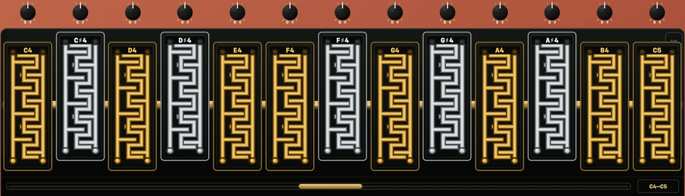
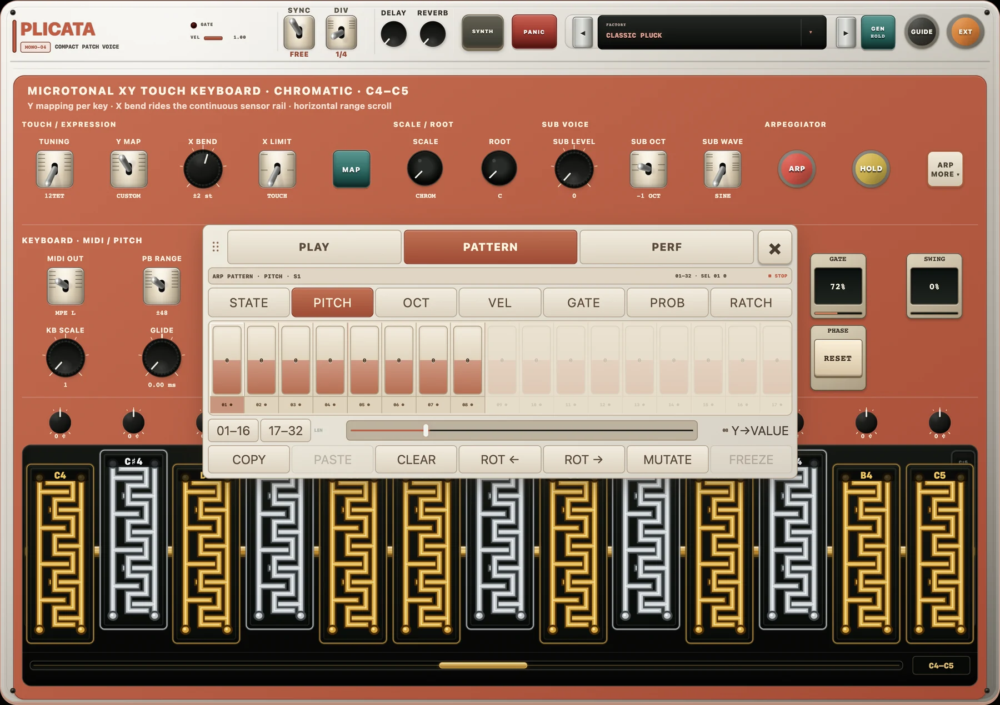
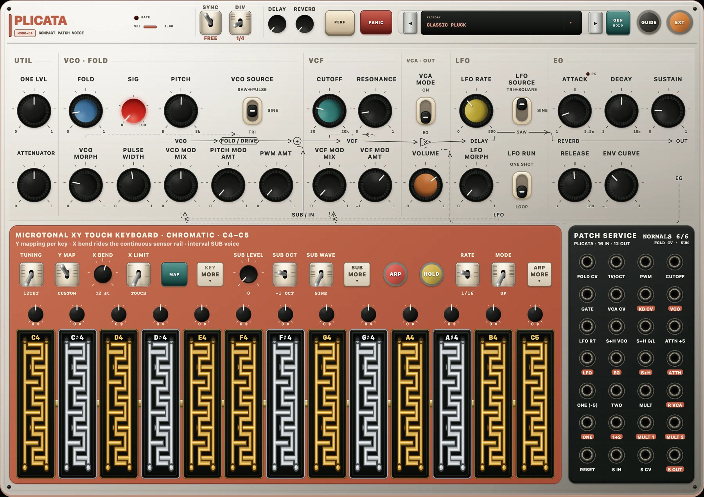

Semi-modular monosynth · Manual
PLICATA
Move between a touch keyboard, a wavefolded synth voice and an arpeggiator you can play by hand.

First note
- Load Classic Pluck
Find Classic Pluck in the Factory presets.
- Play the surface
Touch a key. Slide along it to hear the current Y MAP assignment.
- Open the filter
While holding a note, raise CUTOFF. Add FOLD to hear the wavefolder.
Oscillator, sub and wavefolder
- VCO · Sub
- Wavefolder
- VCF
- VCA
- VCO SOURCE · VCO MORPH
- Choose a source, then shape its waveform.
- SUB LEVEL · SUB OCT
- Bring in the sub voice and set its octave. SUB INT and SUB FINE set its interval and fine offset.
- FOLD · CUTOFF · SIG
- Add harmonics with FOLD, shape them with the filter, and use SIG for the instrument’s character control.
Play the touch keyboard


- Y MAP
- Assign vertical motion to cutoff, filter and fold, or SIG. Set OFF to leave vertical motion unassigned.
- X BEND · X LIMIT
- Set the horizontal pitch-bend range. TOUCH bends from the point of contact. OUT starts bending beyond the key edge.
- TUNING · SCALE · ROOT
- Set the tuning and layout. Trim individual keys when you need notes outside the nominal tuning.
Arpeggiate


- ARP · HOLD
- Switch on ARP and hold several keys. Turn on HOLD to keep the notes latched.
- RATE · GATE
- Set the rhythmic division and note length. Use INT, HOST or MIDI for the arpeggiator clock.
- PATTERN
- Edit the 32 steps in two banks. Use PERF to reach the arpeggiator’s performance controls.
Patch the voice


- EG OUT → FOLD CV
- Send the envelope to the wavefolder to change the harmonic content over a note.
- EXT → Routing
- Show the internal signal paths. Some patched inputs replace their prewired connections.
- FLAVOUR
- Choose the instrument’s processing character from EXT.
Generate and save
- GEN · HOLD
- Tap GEN to generate a patch. Hold it to set ranges and lock the parameters you want to keep.
- Preset display
- Browse Factory and User sounds. Save a new User preset when a patch is worth keeping.
- No sound?
- Switch off ARP and play a key. Check VCO and sub levels, cutoff and any patch connected to the voice path.